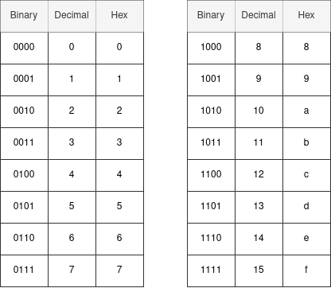

As we've discussed, computers use a binary system to represent their data. The one drawback of this is that large sequences of binary can get pretty tedious for a human to parse and make sense of. On most modern hardware, a sequence of 8 binary symbols is the smallest unit of data. A binary symbol is called a bit, and this 8-bit chunk is called a byte. It turns out, even just looking at this smallest unit can be a bit tedious, for example: 10110101. It takes a bit of time to make sense of that.
This is where hexadecimal comes in, and why it's such a popular encoding base for computing. Hexadecimal is a symbolic representation which uses 16 unique symbols instead of 2 or 10 like binary and decimal. The symbols we use for hexadecimal are the ten symbols used in decimal and then six latin alphabet characters to fill in the remainder: a, b, c, d, e, f.
In terms of the hexadecimal number system, it starts at 0 then 1, 2, 3, and so on the same as decimal until we hit 9. Then, the next symbol after 9 is a, then b, c, d, e, and finally f is the highest symbol value. This means that 'a' in hexadecimal represents '10' in decimal, and 'b' is '11', and so on so that 'f' is '15'.
But as we've seen, the rules of a number system are the same for any base. So, once we've hit 'f' we can just apply the roll-and-increment technique from the previous article and we see that the next symbol after 'f' is '10', which signifies '16' in decimal. After 10 is 11, then 12, and so on until we hit 1f, and then we go to 20, 21, 22, etc.. You get it.
So why is hexadecimal used? 16 seems like a strange base to settle on. Well, if we go back to the byte, which is 8 bits, we can break it up into two 4-bit groups. So in our above example, 10110101 can be broken up into 1011 and 0101, which together form the byte. Let's have a look at all of the numbers we can express if we limit ourselves to at most 4 bits:

As we can see, there's 16 possible combinations you can make with 4 bits, and so every one of these combinations can be represented by exactly one hexadecimal (hex for short) symbol. This means a byte can be represented by exactly two hexadecimal symbols instead of 8 binary ones.
If we consider the two 4-bit groups we broke our original byte into, '1011' and '0101', we can easily represent the full byte in hexadecimal just by looking up these 4-bit chunks in our above table. We can see that '1011' corresponds to 'b' in hexadecimal and that '0101' corresponds to '5' in hexadecimal. Thus, '1011' and '0101' become 'b' and '5', and so our full byte, 10110101, simply becomes b5. It's that simple.
That's the reason hexadecimal is used so frequently, it allows us to represent a byte much more compactly than binary does, using just 2 symbols instead of 8. It's true, we could have used a different base, one that allows us to represent a byte in exactly 1 symbol, and made our representation even smaller. But every time we add a symbol, we get double the amount of new combinations. So if we had 16 combinations with 4 bits, then 5 bits has 32 combinations and 6 has 64, and so on. Actually, you can just do a simple calulation 2^x to figure out how many combinations there are, where x is the number of bits. So, with 8 bits we see there are 256 possible combinations. In other words, to represent a byte in 1 symbol, we would need a representation system that has at least 256 unique symbols.
That's a bit overkill. First of all, it's hard to even figure out what all those symbols would look like. We'd run out pretty soon. And second of all, keeping tracking of 256 symbols in our heads is no easy feat. Hexadecimal strikes a perfect balance. It takes only 2 symbols to represent the byte, which is still very good, and it only requires 16 unique symbols, and since we just use the decimal digits and some letters, it's quite easy to keep all of that straight in our heads.
So, you'll often see binary values represented in hex in computing, because it's often just far more convenient. But hex isn't very hard at all. One thing to keep in mind, is that there are plenty of hexadecimal numbers that look identical to decimal numbers, but of course they're not the same at all. For instance, if you have the numbers: 21, 93, 3472, etc., you actually can't tell by looking at them whether they should be interpreted as hex or decimal. When there's a letter in the mix, like b5, it's clear.
But because of this ambiguity, the convention is to always begin a hexadecimal value with '0x'. So 0x93 means "93 in hexadecimal", whereas 93 means "93 in decimal". If the 0x is omitted, then we assume the representation is decimal. It's also worth noting, that some hexadecimal representations use lowercase letters and others use uppercase. It doesn't really matter at all though, as long as you're consistent. So if you see 0xaf and 0xAF, remember, those are the same thing.
<< Table Of Contents | < (Binary And Decimal) Previous | Hexadecimal | Next (Binary Encoding) >